def random_covariance(n_vars):
"""Create a random covariance matrix with a given correlation."""
# Create a random correlation matrix
A = np.random.randn(n_vars, n_vars)
cov_matrix = np.dot(A, A.T)
return cov_matrix
def create_data_no_signal(n_samples, n_vars, correlated=True):
"""Create completely random data with no signal."""
mean = np.zeros(n_vars)
if correlated:
cov = random_covariance(n_signal_vars+n_noise_vars)
var = np.diag(cov)
# Ensure var of variables is 1
cov = cov / np.sqrt(var[:, None] * var[None, :])
else:
cov = np.eye(n_signal_vars+n_noise_vars)
X = np.random.multivariate_normal(
mean=mean,
cov=cov,
size=n_samples
)
y = np.random.randn(n_samples)
return pd.DataFrame(X), pd.Series(y)
def create_data_with_signal(
n_samples,
n_signal_vars,
n_noise_vars,
betas = None,
correlated = True,
noise_level=1):
"""Create data with a signal in the first n_signal_vars."""
mean = np.zeros(n_signal_vars+n_noise_vars)
if correlated:
cov = random_covariance(n_signal_vars+n_noise_vars)
var = np.diag(cov)
# Ensure var of variables is 1
cov = cov / np.sqrt(var[:, None] * var[None, :])
else:
cov = np.eye(n_signal_vars+n_noise_vars)
X = np.random.multivariate_normal(
mean=mean,
cov=cov,
size=n_samples)
if betas is None:
betas = np.zeros(n_signal_vars + n_noise_vars)
betas[:n_signal_vars] = np.random.randn(n_signal_vars)
assert len(betas) == n_signal_vars + n_noise_vars, "betas must have the same length as the number of variables"
# Create a signal in the first n_signal_vars
y = np.dot(X, betas) + np.random.randn(n_samples) * noise_level * np.var(np.dot(X, betas))
return pd.DataFrame(X), pd.Series(y), betas
def forward_selection(
X: pd.DataFrame, y: pd.Series,
threshold_in=0.05
):
"""Perform forward selection with p-values to find the best subset of features."""
# Initialize variables
n_features = X.shape[1]
selected_features = []
remaining_features = list(X.columns)
np.random.shuffle(remaining_features) # Shuffle features to simulate repeated runs
# Perform forward selection with p-values
while remaining_features:
scores_with_candidates = []
for candidate in remaining_features:
features = selected_features + [candidate]
X_subset = X.loc[:, features]
model = sm.OLS(y, sm.add_constant(X_subset)).fit()
p_value = model.pvalues[candidate]
scores_with_candidates.append((p_value, candidate))
# Sort scores and select the best candidate
scores_with_candidates.sort()
best_new_score, best_candidate = scores_with_candidates[0]
if best_new_score < threshold_in:
selected_features.append(best_candidate)
remaining_features.remove(best_candidate)
else:
break
return selected_features
def backward_selection(
X: pd.DataFrame, y: pd.Series,
threshold_out=0.1
):
"""Perform backward selection with p-values to find the best subset of features."""
# Initialize variables
selected_features = list(X.columns)
# Perform backward selection with p-values
while selected_features:
features = selected_features
X_subset = X.loc[:, features]
model = sm.OLS(y, sm.add_constant(X_subset)).fit()
# Get the feature with the highest p-value
p_values = model.pvalues[1:] # Exclude intercept
max_p_value = p_values.max()
if max_p_value > threshold_out:
feature_to_remove = p_values.idxmax()
selected_features.remove(feature_to_remove)
else:
break
return selected_featuresThe Illusion of Significance
The Cost of p-Values
Abstract
Statistical models drive millions in spending decisions, yet beneath their precise-looking numbers lurks a dangerous problem. This post examines how the practice of selecting variables based on p-values creates a statistical house of cards; especially in Marketing Mix Modeling (MMM) and budget optimization. I show why common techniques like stepwise regression inevitably produce overconfident models with biased estimates that violate the very statistical principles they claim to uphold. These methodological flaws can result in money flowing to the wrong marketing channels based on illusory performance metrics. I demonstrate why Bayesian approaches offer a more honest alternative by naturally tempering overconfidence, incorporating what we already know, and providing intuitive uncertainty measures. Through techniques like spike-and-slab priors (or regularized horseshoe priors) and Bayesian Model Averaging (BMA), analysts can move beyond arbitrary significance thresholds toward probability-based decision-making. While Bayesian methods do require more computational horsepower and thoughtful prior specification, modern software has made them increasingly accessible. Using simulated examples inspired by real-world marketing and economic modeling, I show how Bayesian methods produce more reliable insights that lead to smarter budget allocation decisions.
From Illusion to Insight — TLDR
We’ve all seen it (perhaps even presented it); the perfectly constructed model with impressive-looking p-values that is used to justify adding millions in budget to a particular marketing channel. But how much can we really trust these insights? Statistical modeling approaches that rely on p-value thresholds (or \(\left| \text{t-stat}\right| > 1\)) for variable selection create a fundamental problem: the same data that builds the model also validates it, creating a circular logic that inevitably results in overconfidence. Methods like stepwise regression don’t just produce slightly inaccurate models: they systematically generate biased coefficients, invalid statistical tests, and unstable predictions. When these flawed models drive budget decisions, organizations end up misallocating resources based on what amounts to statistical mirages rather than genuine insights.
Bayesian statistics offers a more realistic alternative that acknowledges what traditional methods try to hide. Uncertainty is real! It should inform our decisions and not be artificially removed through statistical hocus-pocus for a slick deck. By treating parameters as variables with probability distributions and formally incorporating prior knowledge, Bayesian methods can help regularize models; prevent them from making wild claims the data can’t support. Techniques like spike-and-slab priors let us evaluate which variables truly matter without arbitrary cutoffs, while Bayesian Model Averaging sensibly hedges bets across multiple plausible models rather than on a single one. Though implementing Bayesian approaches does require more computational power, technical skill, and careful thought about prior assumptions, the payoff is substantial: more stable estimates, intuitive uncertainty measures that stakeholders can actually understand (seriously what is a confidence interval), and ultimately, budget allocation insights based on reality rather than statistical illusions.
Introduction: Modeling for Decision Making
The P-Value Trap: Why Significance Testing Misleads Model Selection
While p-values remain ubiquitous in statistical analysis, their application in model selection creates systematic distortions. The p-value measures the probability of observing data equally or more extreme than what was collected, assuming the null hypothesis holds true. Yet this metric becomes deeply problematic when used as a selection criterion.
Critical misconceptions persist: Statistical significance doesn’t equate to practical importance. Large datasets can render trivial effects “significant,” while genuinely important relationships may fail arbitrary thresholds. When automated procedures like stepwise regression rely on p-values for variable selection, they introduce cascading failures:
The Seven Deadly Sins of P-Value Selection
The math behind t-stats
In the context of linear regression the test statistic for the i-th coefficient estimate is given as:
\[ \frac{\hat{\beta_i}}{\frac{\hat{\sigma}}{\sqrt{n\hat{\text{Var}}[X_i]}}\sqrt{VIF_i}} \]
It’s clear from the mathematical description of the test statistic that:
- Coefficients (\(\hat{\beta_i}\)) with larger magnitudes — all else being equal — will be more “significant”.
- Models with lower variance (\(\hat{\sigma}\)) will lead to all coefficients being more “significant”.
- Larger sample sizes (n) will increase all coefficients t-stat.
- With increased variance in a predictor (\(\hat{\sigma}\)) — all else being equal — that predictor will be more “significant”.
- With increased correlation of covariate \(X_i\) (\(VIF_i\)) — all else being equal — that predictor will be less “significant”.
1. Systematized Cherry-Picking
Stepwise procedures systematically explore variable combinations until finding “significant” patterns. This automated search through analytical choices—different predictors, transformations, and specifications—guarantees finding patterns that appear meaningful but often reflect random noise. Even examining residuals to guide variable addition constitutes this problematic practice.
2. The Multiplicity Trap
Testing numerous variables inflates false discovery rates exponentially. When evaluating 20 potential predictors, the chance of incorrectly declaring at least one significant approaches certainty. Standard software reports unadjusted p-values, hiding the true extent of multiple testing performed during selection.
Helper Functions
Simulate Variable Selection Based on P-Values
n_trials = 1_000
n_samples = 100
n_signal_vars = 3
n_noise_vars = 20
X, y = create_data_no_signal(
n_trials*n_samples,
n_signal_vars+n_noise_vars,
correlated=False
)
X.columns = [f"X{i}" for i in range(X.shape[1])]
y.name = "y"forward_selected_vars = []
for trial in range(n_trials):
trial_df = X.loc[trial*n_samples:(trial+1)*n_samples-1, :]
trial_y = y.loc[trial*n_samples:(trial+1)*n_samples-1]
forward_selected_vars.append(
forward_selection(
trial_df,
trial_y,
threshold_in=0.05
)
)backward_selected_vars = []
for trial in range(n_trials):
trial_df = X.loc[trial*n_samples:(trial+1)*n_samples-1, :]
trial_y = y.loc[trial*n_samples:(trial+1)*n_samples-1]
backward_selected_vars.append(
backward_selection(
trial_df,
trial_y,
threshold_out=0.05
)
)
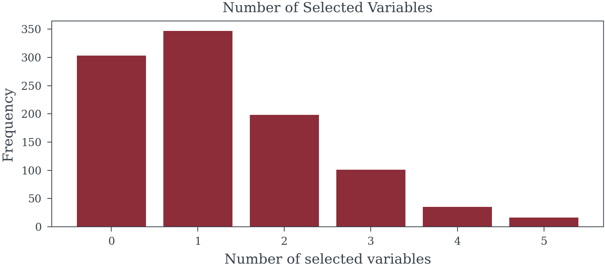
Family-wise error rate: 69.7%
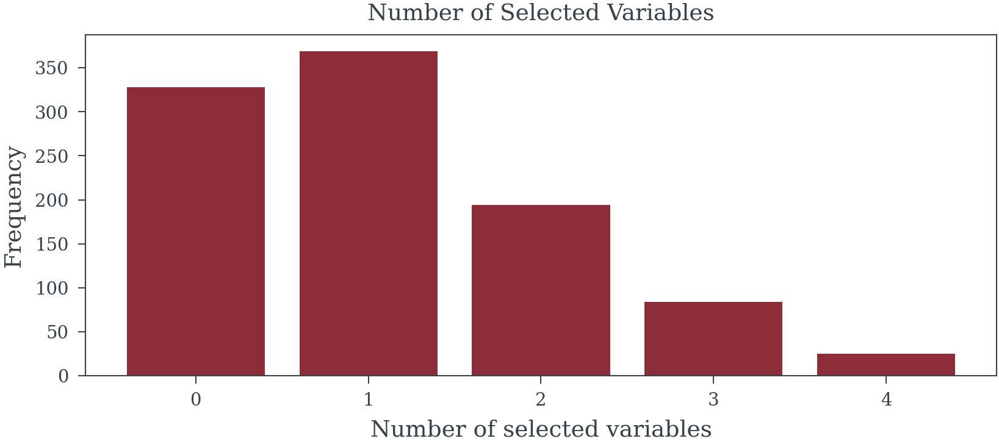
Family-wise error rate: 67.2%3. Chasing Ghosts in the Data
Selection procedures optimize for patterns specific to the training sample, capturing random fluctuations rather than stable relationships. This aggressive pursuit of in-sample fit produces models that fail catastrophically on new data.
Model Analysis
SELECTION_METHOD = backward_selected_vars
n_models_with_var = {
var: sum([var in selected for selected in SELECTION_METHOD])
for var in X.columns
}
in_sample_models = [
sm.OLS(
y.loc[i*n_samples:(i+1)*n_samples-1],
sm.add_constant(X.loc[i*n_samples:(i+1)*n_samples-1, selected])
).fit()
for i, selected in enumerate(SELECTION_METHOD)
]
out_sample_model = [
sm.OLS(
y.loc[~i*n_samples:(i+1)*n_samples-1],
sm.add_constant(X.loc[~i*n_samples:(i+1)*n_samples-1, selected])
).fit()
for i, selected in enumerate(SELECTION_METHOD)
]
in_sample_r2 = [model.rsquared for model in in_sample_models]
out_sample_r2 = [model.rsquared for model in out_sample_model]
predictions = [
model.predict(sm.add_constant(X[selected]))
for selected, model in zip(SELECTION_METHOD, in_sample_models)
]
out_of_sample_mse = [
np.mean((
y.loc[~trial*n_samples:(trial+1)*n_samples-1]
- pred[~trial*n_samples:(trial+1)*n_samples-1]
)**2)
for trial, pred in enumerate(predictions)
]
in_samples_mse = [
np.mean((
y.loc[trial*n_samples:(trial+1)*n_samples-1]
- pred[trial*n_samples:(trial+1)*n_samples-1]
)**2)
for trial, pred in enumerate(predictions)
]
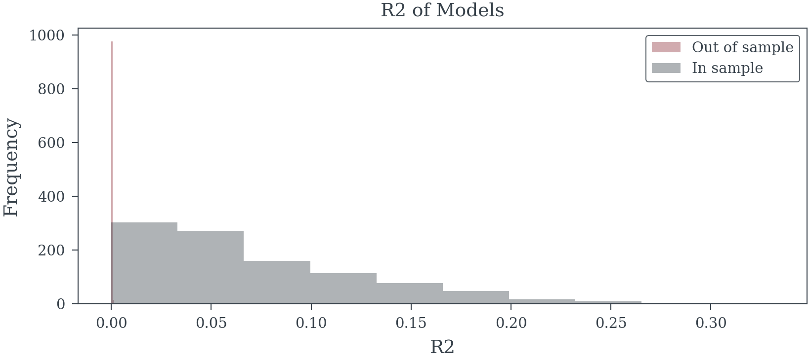
Model Analysis
SELECTION_METHOD = forward_selected_vars
n_models_with_var = {
var: sum([var in selected for selected in SELECTION_METHOD])
for var in X.columns
}
in_sample_models = [
sm.OLS(
y.loc[i*n_samples:(i+1)*n_samples-1],
sm.add_constant(X.loc[i*n_samples:(i+1)*n_samples-1, selected])
).fit()
for i, selected in enumerate(SELECTION_METHOD)
]
out_sample_model = [
sm.OLS(
y.loc[~i*n_samples:(i+1)*n_samples-1],
sm.add_constant(X.loc[~i*n_samples:(i+1)*n_samples-1, selected])
).fit()
for i, selected in enumerate(SELECTION_METHOD)
]
in_sample_r2 = [model.rsquared for model in in_sample_models]
out_sample_r2 = [model.rsquared for model in out_sample_model]
predictions = [
model.predict(sm.add_constant(X[selected]))
for selected, model in zip(SELECTION_METHOD, in_sample_models)
]
out_of_sample_mse = [
np.mean((
y.loc[~trial*n_samples:(trial+1)*n_samples-1]
- pred[~trial*n_samples:(trial+1)*n_samples-1]
)**2)
for trial, pred in enumerate(predictions)
]
in_samples_mse = [
np.mean((
y.loc[trial*n_samples:(trial+1)*n_samples-1]
- pred[trial*n_samples:(trial+1)*n_samples-1]
)**2)
for trial, pred in enumerate(predictions)
]
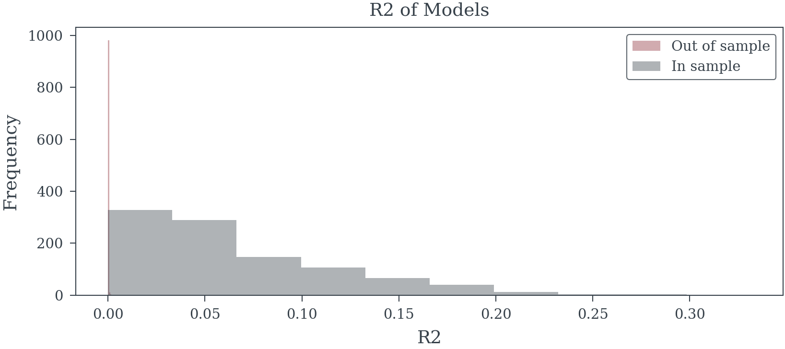
Simulation with Signal
betas = np.array([.2, .1, .3] + [0]*n_noise_vars)
X_signal, y_signal, betas = create_data_with_signal(
n_trials*n_samples,
n_signal_vars,
n_noise_vars,
correlated=True,
betas=betas,
noise_level=3
)
X_signal.columns = [f"X{i}" for i in range(X_signal.shape[1])]
y_signal.name = "y"forward_selected_signal_vars = []
for trial in range(n_trials):
trial_df = X_signal.loc[trial*n_samples:(trial+1)*n_samples-1, :]
trial_y = y_signal.loc[trial*n_samples:(trial+1)*n_samples-1]
forward_selected_signal_vars.append(
forward_selection(
trial_df,
trial_y,
threshold_in=0.05
)
)backward_selected_signal_vars = []
for trial in range(n_trials):
trial_df = X_signal.loc[trial*n_samples:(trial+1)*n_samples-1, :]
trial_y = y_signal.loc[trial*n_samples:(trial+1)*n_samples-1]
backward_selected_signal_vars.append(
backward_selection(
trial_df,
trial_y,
threshold_out=0.05
)
)
Model Analysis
SELECTION_METHOD = forward_selected_signal_vars
in_sample_models = [
sm.OLS(
y_signal.loc[i*n_samples:(i+1)*n_samples-1],
sm.add_constant(X_signal.loc[i*n_samples:(i+1)*n_samples-1, selected])
).fit()
for i, selected in enumerate(SELECTION_METHOD)
]
out_sample_model = [
sm.OLS(
y_signal.loc[~i*n_samples:(i+1)*n_samples-1],
sm.add_constant(X_signal.loc[~i*n_samples:(i+1)*n_samples-1, selected])
).fit()
for i, selected in enumerate(SELECTION_METHOD)
]
in_sample_r2 = [model.rsquared for model in in_sample_models]
out_sample_r2 = [model.rsquared for model in out_sample_model]
predictions = [
model.predict(sm.add_constant(X_signal[selected]))
for selected, model in zip(SELECTION_METHOD, in_sample_models)
]
out_of_sample_mse = [
np.mean((
y_signal.loc[~trial*n_samples:(trial+1)*n_samples-1]
- pred[~trial*n_samples:(trial+1)*n_samples-1]
)**2)
for trial, pred in enumerate(predictions)
]
in_samples_mse = [
np.mean((
y_signal.loc[trial*n_samples:(trial+1)*n_samples-1]
- pred[trial*n_samples:(trial+1)*n_samples-1]
)**2)
for trial, pred in enumerate(predictions)
]
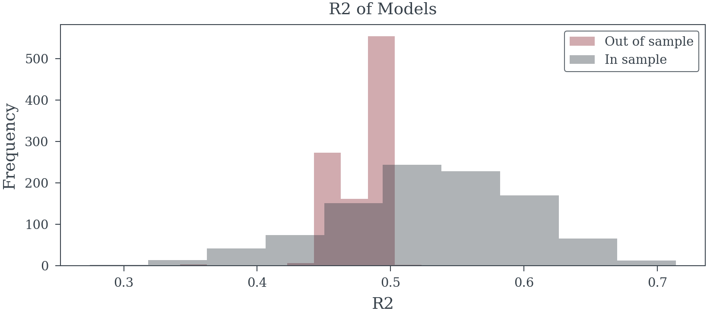
Model Analysis
SELECTION_METHOD = backward_selected_signal_vars
in_sample_models = [
sm.OLS(
y_signal.loc[i*n_samples:(i+1)*n_samples-1],
sm.add_constant(X_signal.loc[i*n_samples:(i+1)*n_samples-1, selected])
).fit()
for i, selected in enumerate(SELECTION_METHOD)
]
out_sample_model = [
sm.OLS(
y_signal.loc[~i*n_samples:(i+1)*n_samples-1],
sm.add_constant(X_signal.loc[~i*n_samples:(i+1)*n_samples-1, selected])
).fit()
for i, selected in enumerate(SELECTION_METHOD)
]
in_sample_r2 = [model.rsquared for model in in_sample_models]
out_sample_r2 = [model.rsquared for model in out_sample_model]
predictions = [
model.predict(sm.add_constant(X_signal[selected]))
for selected, model in zip(SELECTION_METHOD, in_sample_models)
]
out_of_sample_mse = [
np.mean((
y_signal.loc[~trial*n_samples:(trial+1)*n_samples-1]
- pred[~trial*n_samples:(trial+1)*n_samples-1]
)**2)
for trial, pred in enumerate(predictions)
]
in_samples_mse = [
np.mean((
y_signal.loc[trial*n_samples:(trial+1)*n_samples-1]
- pred[trial*n_samples:(trial+1)*n_samples-1]
)**2)
for trial, pred in enumerate(predictions)
]
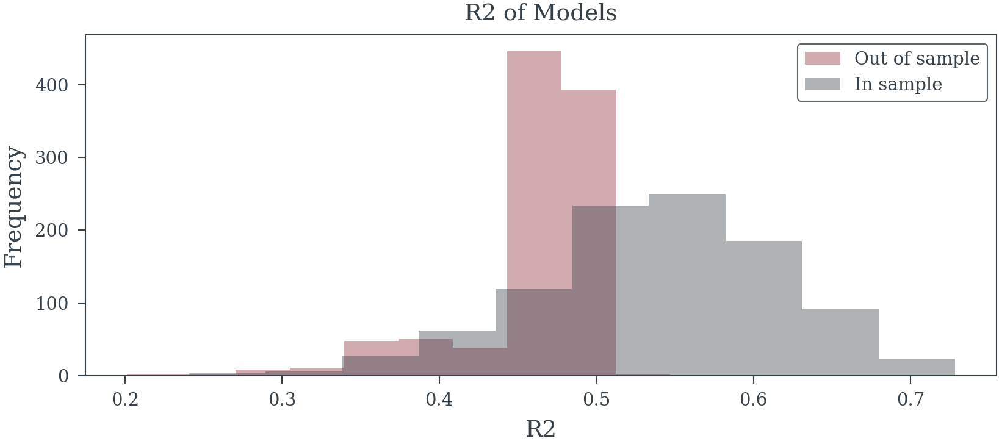
4. Systematic Bias in Effect Sizes
Selected variables exhibit inflated coefficients—not because they’re truly important, but because the selection process favors variables that randomly showed stronger associations. This “winner’s curse” systematically overstates the magnitude of selected effects.
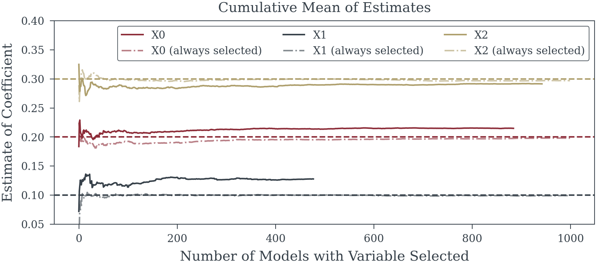
5. False Precision
Post-selection standard errors understate true uncertainty. Confidence intervals appear misleadingly narrow, and p-values seem artificially compelling. These metrics assume the model was pre-specified, not constructed through data exploration, rendering them fundamentally invalid.
Coverage of 95% confidence interval for X0: 85.3%
Coverage of 95% confidence interval for X1: 80.1%
Coverage of 95% confidence interval for X2: 83.1%6. Fragile Foundations
Minor data perturbations can dramatically alter selected variables, especially with correlated predictors common in marketing data. Models that shift drastically with small changes provide unreliable foundations for business decisions.
Selection frequency of model Y ~ X0 + X1 + X2: 17.8%
Selection frequency of model Y ~ X0 + X2: 12.2%
Selection frequency of model Y ~ X0 + X2 + X18: 1.4%
Selection frequency of model Y ~ X0 + X2 + X22: 1.1%
Selection frequency of model Y ~ X0 + X2 + X5: 1.1%
Selection frequency of model Y ~ X0 + X1 + X2 + X21: 0.9%
Selection frequency of model Y ~ X0 + X2 + X15: 0.9%
Selection frequency of model Y ~ X0 + X1 + X2 + X15: 0.8%
Selection frequency of model Y ~ X0 + X1 + X2 + X19: 0.8%
Selection frequency of model Y ~ X0 + X2 + X4: 0.7%
Selection frequency of other models: 62.3%7. Transformation Theater
Selecting functional forms (logarithmic, polynomial, adstock curves) based on significance compounds these problems. Testing hundreds of possible transformations virtually guarantees finding spurious patterns that optimize noise rather than signal.
The fundamental flaw: Using the same data for both model construction and inference violates core statistical principles. When data drives model specification, subsequent p-values and confidence intervals lose their theoretical justification. The model becomes a product of exploration, not a hypothesis to test.
When Statistical Illusions Drive Business Decisions
The fundamental flaws in p-value driven selection cascade into real-world consequences that directly undermine business objectives. These aren’t merely theoretical concerns—they systematically distort our understanding of marketing effectiveness and lead to predictably poor outcomes.
False Signals Masquerading as Insights
Time-series data creates fertile ground for statistical mirages. When ice cream sales and drowning incidents both spike in summer, naive selection procedures eagerly identify “significant” relationships without recognizing the underlying seasonal driver. In MMM contexts, these spurious associations proliferate: variables that merely share trends or seasonal patterns get misidentified as meaningful predictors. Each false inclusion not only clutters the model but actively degrades our ability to estimate genuine marketing effects with precision.
The Hidden Cost of Arbitrary Thresholds
Significance cutoffs create a binary world where p = 0.049 means inclusion and p = 0.051 means exclusion—despite these values being functionally identical. This arbitrary boundary systematically excludes genuine causal factors that happen to fall just above the threshold in a particular sample. When these excluded variables correlate with included predictors, their omission biases every remaining coefficient. The model doesn’t just miss one relationship; it distorts all others.
Causal Blindness in Automated Selection
Statistical algorithms operate without causal awareness, unable to distinguish between fundamentally different types of relationships:
- Confounders that must be included to block spurious associations
- Mediators whose inclusion obscures the total effects we seek to measure
- Colliders that create artificial associations when mistakenly conditioned upon
Procedures that select variables based solely on statistical association routinely include variables that poison causal interpretation (mediators, colliders) while excluding those essential for valid inference (confounders). The resulting model becomes a causal minefield where coefficients represent unknown mixtures of direct effects, indirect pathways, and induced biases.
The Analyst’s Dilemma: When Wrong Becomes Right
Perhaps most insidiously, these flawed models create organizational inertia that perpetuates their errors. Analysts face immense pressure to ensure their updated models produce the same high-level conclusions as previous efforts—that TV drives 30% of sales, that digital ROI is 2.5x, that seasonality accounts for 15% of variance. This leads to a troubling pattern of behaviors:
- Reverse Engineering Results: When new data suggests different attribution patterns, analysts manipulate model specifications until familiar conclusions emerge—adjusting adstock parameters, saturation curves, or control variables not for statistical validity but to reproduce expected ROI rankings
- Strategic Time Splitting: Models that attribute “too much” or “too little” to certain channels get subdivided into multiple time periods, fracturing the data until each segment yields the “correct” share of voice
- Selective Variable Inclusion: External factors get added or removed based on how they shift attribution between channels, using statistical significance as cover for what amounts to results manipulation
- Transformation Shopping: Analysts cycle through combinations of functional forms until the model produces ROI estimates and attribution percentages that align with organizational beliefs
This creates a vicious cycle where each generation of models must reproduce not just any results, but the specific business conclusions that stakeholders have internalized. “TV should drive 25-35% of sales” becomes an unquestionable truth that models must confirm rather than test.
From Flawed Models to Failed Strategies
These statistical distortions translate directly into business failures. Biased coefficients paint a fantasy landscape of marketing effectiveness—some channels appear artificially powerful while others seem worthless or even harmful. Budget optimization based on these illusions inevitably fails: money flows to channels whose effectiveness was overstated while truly profitable opportunities starve for investment. The false confidence provided by inappropriately narrow confidence intervals compounds the damage, encouraging aggressive reallocation based on estimates that are both wrong and wrongly certain.
The Reproducibility Crisis in Practice
Models built on sample-specific quirks fail to generalize. When next quarter’s data arrives, the carefully selected variable set often produces wildly different results—or the selection procedure itself chooses entirely different variables. Rather than acknowledging this instability as evidence of flawed methodology, analysts scramble to manipulate the new model until it reproduces familiar attribution patterns and ROI hierarchies. This stability theater destroys organizational learning: teams spend more effort confirming past conclusions than discovering new truths. Strategic planning becomes impossible when the “insights” guiding it are actually fossilized artifacts of historical data mining.
The compound effect is devastating: flawed statistical procedures produce unstable models with biased coefficients, which generate incorrect ROI estimates that become organizational “truth,” leading to poor budget allocation and ultimately reduced business performance. What begins as a methodological shortcut evolves into an institutional pathology where being consistently wrong becomes preferable to admitting uncertainty.
The Reality Gap: When Exploratory Analysis Masquerades as Causal Insight
Modern Marketing Mix Modeling exists in a troubling state of methodological confusion. Practitioners routinely present their models as predictive engines capable of forecasting future performance, while stakeholders interpret and apply these same models as causal instruments for optimizing budget allocation. The uncomfortable truth is that most MMM implementations are, at best, sophisticated exploratory analyses dressed up in the language of prediction and causation.
This disconnect between claims and capabilities creates a cascade of poor decisions. When exploratory models—built through p-value mining and post-hoc selection—are treated as causal truth, organizations systematically misallocate resources based on statistical mirages. The biased coefficients and overfitted relationships that emerge from flawed selection procedures don’t merely represent academic concerns; they translate directly into wasted marketing spend and missed opportunities.
Perhaps most perniciously, these flawed models become the benchmarks against which new methodologies are evaluated. When a novel approach produces different results from traditional stepwise regression, it’s often dismissed as “inconsistent with established models” rather than recognized as potentially more accurate. This creates a self-reinforcing cycle where statistical illusions become institutionalized truths, and genuine improvements are rejected for failing to reproduce familiar biases.
The path forward requires honest acknowledgment of what current MMM practices actually deliver: exploratory insights that might suggest interesting patterns but cannot reliably predict future outcomes or identify causal relationships. Until the field adopts more rigorous methodologies—whether through Bayesian frameworks, proper regularization, or genuine causal inference techniques—we must stop pretending that models built on circular logic and data dredging can guide multi-million dollar decisions. The stakes are too high, and the methods too flawed, to continue conflating exploration with explanation.
The Path Forward: Getting Comfortable with Uncertainty
The Uncertainty Laundering Machine
Statistician Andrew Gelman offers a devastating critique of how statistics is abused that perfectly captures the MMM crisis:
“The ethics comes in if we think of this entire journal publication system as a sort of machine for laundering uncertainty: researchers start with junk data (for example, poorly-thought-out experiments on college students, or surveys of online Mechanical Turk participants) and then work with the data, straining out the null results and reporting what is statistically significant, in a process analogous to the notorious mortgage lenders of the mid-2000s, who created high-value ‘tranches’ out of subprime loans. The loan crisis precipitated an economic recession, and I doubt the replication crisis will trigger such a crash in science. But I see a crucial similarity in that technical methods (structured finance for mortgages; statistical significance for scientific research) were being used to create value out of thin air.”
This analogy illuminates exactly what’s happening in MMM. We start with inherently uncertain, observational data—weekly sales figures confounded by countless factors, media spend that varies with business strategy, competitive actions we can’t fully observe. Then we run this “junk data” through our statistical machinery, straining out the non-significant variables, p-hacking our way to impressive results, and packaging the survivors as “insights.”
Just as subprime mortgages got repackaged as AAA-rated securities, uncertain correlations get transformed into “proven” ROI figures. The technical sophistication of the process—the complex adstock transformations, the multi-stage regression models, the impressive p-values—serves the same function as the financial engineering of the 2000s: it launders uncertainty, creating an appearance of value and reliability that doesn’t actually exist.
The MMM Value Mirage
In marketing analytics, this laundering process follows a predictable pattern:
- Start with messy reality: Aggregated time series with ~200 observations, dozens of correlated variables, unobserved confounders
- Apply the machinery: Stepwise regression, transformation selection, significance testing
- Strain out uncertainty: Discard “non-significant” variables, ignore wide confidence intervals, suppress unstable results
- Package as certainty: “TV delivers 3.2x ROI (p < 0.001)”
The organization receives what appears to be valuable intelligence—precise ROI estimates, clear attribution percentages, “data-driven” recommendations. But like those mortgage-backed securities, the value is illusory. We’ve used technical methods to create certainty out of thin air.
From False Precision to Honest Ignorance
The marketing analytics industry has become addicted not just to certainty, but to this process of manufacturing it. Stakeholders demand precise ROI figures, and analysts have built an entire infrastructure—not to find truth, but to launder the fundamental uncertainty of marketing effectiveness into seemingly solid insights. The narrow confidence intervals and impressive p-values aren’t evidence of precision; they’re the output of a machine designed to hide uncertainty, not quantify it.
The first step forward is dismantling the laundering machine. We must stop using statistical sophistication to obscure uncertainty and start using it for its proper purpose: to honestly quantify and communicate what we don’t know. Real marketing effects are messy, context-dependent, and riddled with uncertainty. Any methodology that claims otherwise is selling false comfort rather than actionable insight.
Why Uncertainty Is Your Friend, Not Your Enemy
Uncertainty isn’t a flaw to be hidden—it’s crucial information that should guide decision-making. Consider two scenarios:
- Traditional approach: “TV ROI is 3.2x”
- Honest approach: “TV ROI is likely between 1.5x and 5x, with our best estimate at 3x”
The second statement contains more useful information. It acknowledges that TV might be marginally profitable or highly lucrative, suggesting a portfolio approach rather than an all-or-nothing strategy. The traditional approach’s false precision encourages overconfident bets based on point estimates that are likely wrong.
Uncertainty quantification enables better decisions:
- Portfolio thinking: Wide credible intervals suggest diversification
- Experimentation priorities: High uncertainty indicates where tests would be most valuable
- Risk management: Understanding the range of possible outcomes prevents catastrophic misallocation
- Stakeholder trust: Acknowledging limitations builds more credibility than false precision
Bayesian Methods: Where Uncertainty Is a Feature, Not a Bug
Bayesian approaches offer a natural framework for embracing uncertainty. Rather than producing single “best” models with spurious precision, Bayesian methods:
- Quantify parameter uncertainty: Every coefficient comes with a full probability distribution, not just a point estimate
- Propagate uncertainty honestly: Uncertainty in parameters flows through to uncertainty in predictions and decisions
- Incorporate prior knowledge: Historical information and business constraints enter through priors, not through p-hacking
- Average over possibilities: Instead of selecting one model, Bayesian Model Averaging acknowledges multiple plausible realities
When implemented properly, these methods produce results that might initially disappoint those seeking false precision: “Digital marketing ROI is probably positive (85% probability above 1.0x) with a median estimate of 1.8x and substantial uncertainty (90% credible interval: 0.7x to 4.2x).” Yet this honest assessment provides far more value than a precisely wrong point estimate.
Practical Steps Toward Uncertainty-Aware MMM
1. Reframe the Conversation
- Stop asking “What’s the exact ROI?” and start asking “What range of ROIs is plausible?”
- Replace “Which model is correct?” with “What do multiple reasonable models suggest?”
- Shift from “Prove this channel works” to “How confident are we about this channel’s effectiveness?”
2. Adopt Robust Methodologies
- Implement regularization techniques that acknowledge coefficient uncertainty
- Use Bayesian methods with thoughtful priors based on accumulated knowledge
- Employ ensemble approaches that combine multiple models rather than selecting one
- Validate through hold-out testing that honestly assesses predictive uncertainty
3. Visualize Uncertainty
- Replace tables of point estimates with distributional plots
- Show credible/confidence intervals prominently, not as footnotes
- Use scenario planning based on uncertainty ranges
- Create decision rules that explicitly account for uncertainty levels
4. Build Organizational Comfort
- Educate stakeholders that uncertainty is information, not incompetence
- Celebrate decisions that acknowledge and plan for uncertainty
- Reward analysts who surface uncomfortable uncertainties over those who provide false comfort
- Create processes that use uncertainty to guide experimentation priorities
The Competitive Advantage of Honest Uncertainty
Organizations that embrace uncertainty gain a paradoxical advantage: by admitting what they don’t know, they make better decisions than competitors clinging to false precision. They:
- Avoid catastrophic bets based on spuriously precise estimates
- Identify genuine opportunities that uncertainty-averse competitors miss
- Build resilient strategies that perform well across plausible scenarios
- Learn faster by focusing experimentation where uncertainty is highest
- Adapt more quickly when reality diverges from estimates
A New Standard for MMM Excellence
The future of marketing analytics lies not in ever-more-sophisticated methods for manufacturing certainty, but in frameworks that honestly quantify and communicate what we don’t know. Excellence should be measured not by how narrow our confidence intervals are, but by how well our uncertainty estimates reflect reality.
This requires a fundamental shift: from viewing uncertainty as a problem to solve, to recognizing it as essential information for decision-making. Only by getting comfortable with uncertainty can we move beyond the statistical theater that currently dominates MMM and toward methods that genuinely improve marketing effectiveness.
The path forward is clear: Embrace uncertainty, quantify it honestly, and use it to make more robust decisions. The alternative—continuing to pretend we know more than we do—has already proven its capacity for expensive failure.
From Statistical Theater to Decision Science: A Synthetic Case Study
Introduction: Two Paradigms, Two Futures
To illustrate the stark contrast between current practices and what’s possible, we present a synthetic case study of a hypothetical consumer brand allocating $50 million across marketing channels. We’ll analyze the same dataset through two fundamentally different lenses:
The Status Quo: A traditional frequentist approach that relies on stepwise selection, p-value thresholds, and point estimates—the statistical laundering machine in action.
The Alternative: A Bayesian causal framework that explicitly models uncertainty, incorporates domain knowledge, and acknowledges multiple plausible realities—an honest attempt to support decision-making under uncertainty.
This isn’t merely an academic exercise. The differences in these approaches translate directly into millions of dollars in marketing effectiveness. One path leads to overconfident bets based on statistical mirages; the other to robust strategies that perform well across the range of plausible truths. The following analysis demonstrates not just why change is necessary, but what that change looks like in practice.
1. The Business Context and Data Generating Process
- Company background and marketing challenge
- True underlying causal structure (hidden from analysts)
- Simulated data generation with realistic confounders
- Observable variables vs. latent factors
Synthetic Data Generation
def hill_transformation(x, alpha=1, k=0.5):
"""
Hill saturation transformation
x: media spend (scaled 0-1)
alpha: shape parameter (<=1 for c-shaped curve, >1 for s-shaped)
k: half-saturation point
"""
return x**alpha / (x**alpha + k**alpha)
def model_simulate(
X: pd.DataFrame,
coeffs_main: pd.Series,
intercept: float,
alphas: pd.Series,
k_values: pd.Series,
media_maxes: pd.Series,
noise_level: float = 0.1,
random_seed: int = 42,
):
np.random.seed(random_seed)
X = X.copy()
media_vars = list(alphas.index)
X_scaled = X[media_vars] / (media_maxes + 1e-10)
for media_var in media_vars:
X[media_var] = hill_transformation(X_scaled[media_var], alpha=alphas[media_var], k=k_values[media_var])
contribution = X*coeffs_main
y_mean = X.dot(coeffs_main) + intercept
y_sample = y_mean + np.random.normal(0, noise_level, size=len(y_mean))
return X, y_mean, contribution, y_sample
def generate_synthetic_mmm_data(
n_weeks=156,
n_media=5,
random_seed=42
):
"""
Generate realistic MMM data with complex causal structure including mediator, confounders and colliders
n_weeks: 3 years of weekly data
"""
np.random.seed(random_seed)
# Time index
t = np.arange(n_weeks)
# ========================================
# CONFOUNDERS (affect both media spend and sales)
# ========================================
# 1. Seasonality - drives both promotional activity and natural sales patterns
seasonality = 0.3 * np.sin(2 * np.pi * t / 52) + 0.1 * np.sin(4 * np.pi * t / 52)
# 2. Macroeconomic conditions - affects marketing budgets and consumer spending
gdp_growth = 0.02 + 0.01 * np.sin(2 * np.pi * t / 104) + np.random.normal(0, 1, n_weeks).cumsum() / n_weeks
unemployment = 5.0 + 2.0 * np.sin(2 * np.pi * t / 156 + 1.5) + np.random.normal(0, 0.2, n_weeks)
consumer_confidence = 100 + 10 * gdp_growth * 10 - 2 * unemployment + np.random.normal(0, 3, n_weeks)
# 3. Major retail events - drive both promotional spend and sales
holidays = np.zeros(n_weeks)
black_friday = [(w % 52 == 47) for w in range(n_weeks)]
christmas = [(w % 52 >= 50) or (w % 52 <= 1) for w in range(n_weeks)]
holidays[black_friday] = 1.5
holidays[christmas] = 1.0
# 4. Competitor promotional intensity - triggers reactive spending and affects sales
competitor_promos = 0.3 + 0.2 * np.sin(2 * np.pi * t / 13) + 0.1 * np.random.randn(n_weeks).cumsum() / n_weeks
competitor_promos = np.clip(competitor_promos, 0, 1)
# 5. Product lifecycle stage - affects marketing strategy and natural demand
product_age = t / 52 # Years since launch
product_lifecycle = np.exp(-product_age / 2) * 0.5 + 0.5 # Decaying newness effect
# ========================================
# SALES DRIVERS (affect sales but NOT media spend)
# ========================================
# 1. Distribution gains - more stores carrying product
distribution_points = 1000 + 10 * t + np.random.normal(0, 20, n_weeks).cumsum()
distribution_index = distribution_points / distribution_points[0]
# 2. Product quality improvements (e.g., ratings)
quality_score = 4.0 + 0.02 * t / n_weeks + 0.1 * np.random.randn(n_weeks).cumsum() / n_weeks
quality_score = np.clip(quality_score, 3.5, 5.0)
# 3. Word of mouth momentum (builds over time, not marketing driven)
wom_momentum = 0.1 * (1 - np.exp(-t / 26)) + 0.05 * np.random.randn(n_weeks).cumsum() / n_weeks
wom_momentum = np.clip(wom_momentum, 0, 0.3)
# ========================================
# RED HERRINGS (correlated but don't affect sales)
# ========================================
# 1. Weather patterns (correlate with seasonality but don't drive sales)
temperature = 60 + 25 * np.sin(2 * np.pi * t / 52) + np.random.normal(0, 7, n_weeks)
precipitation = 2 + 1.5 * np.sin(2 * np.pi * t / 52 + 3) + np.abs(np.random.normal(0, 0.5, n_weeks))
# 2. Stock market index (correlates with economy but doesn't directly drive sales)
stock_index = 10000 + 50 * t + 500 * gdp_growth.cumsum() + 200 * np.random.randn(n_weeks).cumsum()
# 3. Social media followers (grows over time but doesn't drive sales)
social_followers = 10000 * (1 + 0.02 * t + 0.1 * np.random.randn(n_weeks).cumsum() / n_weeks)
social_followers = np.maximum(social_followers, 10000)
# 4. Website traffic (correlates with media but doesn't independently drive sales)
base_traffic = 50000 + 500 * t
# 5. Number of SKUs (correlates with time but doesn't affect aggregate sales)
num_skus = 10 + np.floor(t / 26) + np.random.binomial(2, 0.1, n_weeks).cumsum()
# ========================================
# MEDIA SPEND GENERATION
# ========================================
media_names = ['TV', 'Digital', 'Social', 'Radio', 'Print']
media_spend_raw = np.zeros((n_weeks, n_media))
# Budget influenced by confounders
total_budget_index = (1.0 +
0.2 * consumer_confidence / 100 +
0.6 * holidays +
0.4 * product_lifecycle -
0.15 * competitor_promos)
# TV: Traditional, holiday-focused, reactive to competition
media_spend_raw[:, 0] = (200000 * (total_budget_index *
(0.4 + 0.3 * holidays + 0.2 * seasonality - 0.1 * competitor_promos)) *
(1 + 0.2 * np.random.randn(n_weeks)))
# Digital: Growing trend, responsive to GDP
media_spend_raw[:, 1] = (150000 * (total_budget_index *
(0.3 + 0.05 * t / n_weeks + 0.2 * gdp_growth * 10)) *
(1 + 0.3 * np.random.randn(n_weeks)))
# Social: Volatile, product-launch focused
media_spend_raw[:, 2] = (80000 * (total_budget_index *
(0.2 + 0.4 * product_lifecycle - 0.2 * holidays)) *
(1 + 0.5 * np.random.randn(n_weeks)))
# Radio: Steady with seasonal pattern
media_spend_raw[:, 3] = (50000 * (total_budget_index *
0.3 + 0.2 * seasonality) *
(1 + 0.4 * np.random.randn(n_weeks)))
# Print: Declining trend, older demographic
media_spend_raw[:, 4] = (40000 * total_budget_index *
(0.4 - 0.1 * t / n_weeks) *
(1 + 0.3 * np.random.randn(n_weeks)))
# Ensure non-negative
media_spend_raw = np.maximum(media_spend_raw, 0)
# Scale and transform
media_spend_scaled = media_spend_raw / (media_spend_raw.max(axis=0) + 1e-10)
media_transformed = np.zeros_like(media_spend_scaled)
# Different saturation parameters by channel
alphas = [1.0, 2.0, 1.4, 1.0, 1.2]
k_values = [0.4, 0.3, 0.35, 0.5, 0.6]
for i in range(n_media):
media_transformed[:, i] = hill_transformation(media_spend_scaled[:, i], alphas[i], k_values[i])
# Update website traffic based on digital spend (red herring - correlates but doesn't cause sales)
website_traffic = base_traffic + 1000 * media_transformed[:, 1] + 500 * media_transformed[:, 2]
# ========================================
# MEDIATOR VARIABLE (Media → Purchase Intent → Sales)
# ========================================
# Purchase intent is driven by media spend (especially TV and Digital)
# This represents the percentage of consumers intending to purchase
purchase_intent_base = 0.15 # 15% base intent
indirect_media_effects = np.array([0.12, 0.10, 0.08, 0.04, 0.02]) # Indirect media effects on intent
# Media drives purchase intent
purchase_intent = (purchase_intent_base +
0.12 * media_transformed[:, 0] + # TV has strong effect on intent
0.10 * media_transformed[:, 1] + # Digital also drives intent
0.08 * media_transformed[:, 2] + # Social moderate effect
0.04 * media_transformed[:, 3] + # Radio small effect
0.02 * media_transformed[:, 4] + # Print minimal effect
0.05 * seasonality + # Some seasonal variation
0.03 * np.random.randn(n_weeks)) # Random noise
purchase_intent = np.clip(purchase_intent, 0, 0.6) # Cap at 60% intent
# ========================================
# TRUE SALES GENERATION (Multiplicative Model)
# ========================================
# Direct media effects (excluding path through purchase intent)
# These are smaller because some effect goes through the mediator
direct_media_effects = np.array([0.08, 0.08, 0.04, 0.04, 0.02])
# Effect of purchase intent on sales
purchase_intent_effect = 2.0 # Strong effect of intent on sales
# True TOTAL media effects (including path through purchase intent)
true_total_media_effects = indirect_media_effects * purchase_intent_effect + direct_media_effects
# Base sales (log scale)
log_base_sales = 6.0 # exp(6) ~ 403 base sales
# Build sales from true drivers only
log_sales = (log_base_sales +
# Confounders
0.25 * seasonality +
0.15 * (consumer_confidence - 100) / 20 +
0.35 * holidays +
-0.20 * (competitor_promos - 0.5) +
0.10 * product_lifecycle +
# Sales-only drivers
0.30 * np.log(distribution_index) +
0.20 * (quality_score - 4.0) +
0.15 * wom_momentum +
# MEDIATOR effect
purchase_intent_effect * (purchase_intent - purchase_intent_base))
# Add DIRECT media effects only
for i in range(n_media):
log_sales += direct_media_effects[i] * media_transformed[:, i]
# Add noise
log_sales += np.random.normal(0, 0.02, n_weeks)
# Convert to sales
sales = np.exp(log_sales)
# ========================================
# COLLIDER (affected by both media and sales)
# ========================================
# Brand awareness surveys - caused by both advertising and sales success
brand_awareness = (20 + # Base awareness
15 * (media_transformed[:, 0] + 0.5 * media_transformed[:, 1]) + # TV and Digital drive awareness
10 * (sales / sales.mean() - 1) + # Success drives awareness
5 * np.random.randn(n_weeks)) # Noise
brand_awareness = np.clip(brand_awareness, 0, 100)
# ========================================
# CREATE DATAFRAME
# ========================================
data = pd.DataFrame({
'week': t,
'sales': sales,
'log_sales': log_sales,
# Confounders
'seasonality': seasonality,
'gdp_growth': gdp_growth,
'unemployment': unemployment,
'consumer_confidence': consumer_confidence,
'holidays': holidays,
'competitor_promos': competitor_promos,
'product_lifecycle': product_lifecycle,
# Sales drivers (not media drivers)
'distribution_index': distribution_index,
'quality_score': quality_score,
'word_of_mouth': wom_momentum,
# Red herrings (don't affect sales)
'temperature': temperature,
'precipitation': precipitation,
'stock_index': stock_index,
'social_followers': social_followers,
'website_traffic': website_traffic,
'num_skus': num_skus,
# MEDIATOR
'purchase_intent': purchase_intent,
# Collider
'brand_awareness': brand_awareness
})
# Add media variables
for i, name in enumerate(media_names):
data[f'{name}_spend'] = media_spend_raw[:, i]
data[f'{name}_spend_scaled'] = media_spend_scaled[:, i]
data[f'{name}_transformed'] = media_transformed[:, i]
# Create some derived features that stepwise might pick up
data['temp_squared'] = data['temperature'] ** 2
data['awareness_change'] = data['brand_awareness'].diff().fillna(0)
data['intent_change'] = data['purchase_intent'].diff().fillna(0)
data['spend_total'] = media_spend_raw.sum(axis=1)
return data, true_total_media_effects, direct_media_effects, {"indirect": indirect_media_effects,"alphas": alphas, "k_values": k_values} , media_names
True Market Structure
# Generate the data
data, true_total_effects, true_direct_effects, params, media_names = generate_synthetic_mmm_data(random_seed=12, n_weeks=362)
print(f"\nTrue TOTAL media effects (including indirect path): {dict(zip(media_names, true_total_effects))}")
print(f"True DIRECT media effects (excluding mediator path): {dict(zip(media_names, true_direct_effects))}")
True TOTAL media effects (including indirect path): {'TV': np.float64(0.32), 'Digital': np.float64(0.28), 'Social': np.float64(0.2), 'Radio': np.float64(0.12), 'Print': np.float64(0.06)}
True DIRECT media effects (excluding mediator path): {'TV': np.float64(0.08), 'Digital': np.float64(0.08), 'Social': np.float64(0.04), 'Radio': np.float64(0.04), 'Print': np.float64(0.02)}plt.plot(data['TV_spend'].sort_values(), cont['TV_spend'].sort_values()*100, label='TV Spend Contribution', color='C0', alpha=0.6)
plt.plot(data['Digital_spend'].sort_values(), cont['Digital_spend'].sort_values()*100, label='Digital Spend Contribution', color='C1', alpha=0.6)
plt.plot(data['Social_spend'].sort_values(), cont['Social_spend'].sort_values()*100, label='Social Spend Contribution', color='C2', alpha=0.6)
plt.plot(data['Print_spend'].sort_values(), cont['Print_spend'].sort_values()*100, label='Print Spend Contribution', color='C3', alpha=0.6)
plt.plot(data['Radio_spend'].sort_values(), cont['Radio_spend'].sort_values()*100, label='Radio Spend Contribution', color='C4', alpha=0.6)
plt.xlabel("Spend")
plt.ylabel("% Lift to Sales")
plt.title("Media Spend Contribution to Sales")
plt.legend();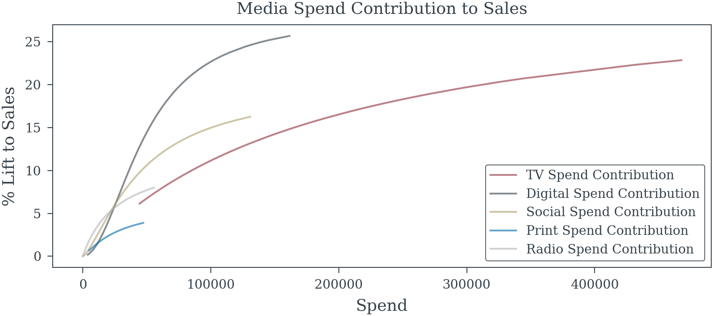
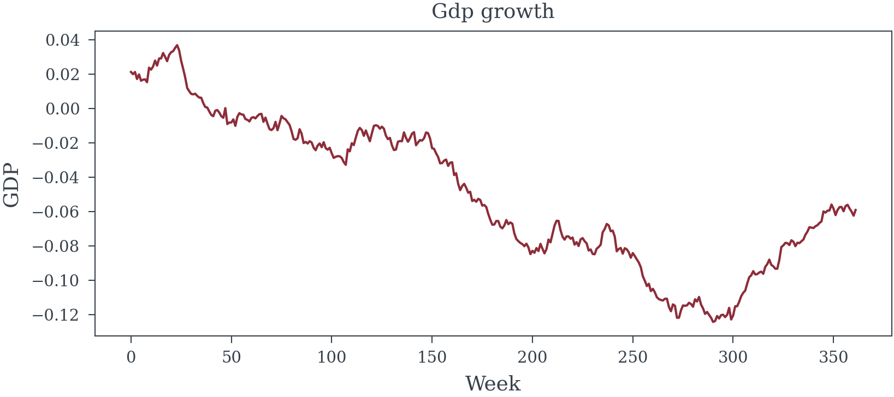
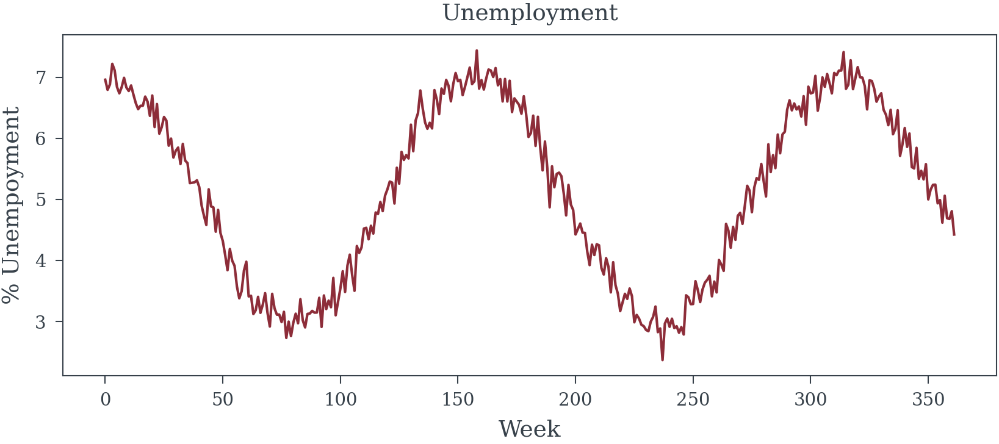
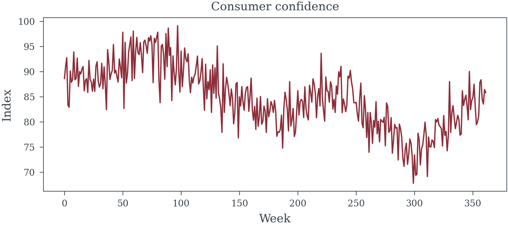
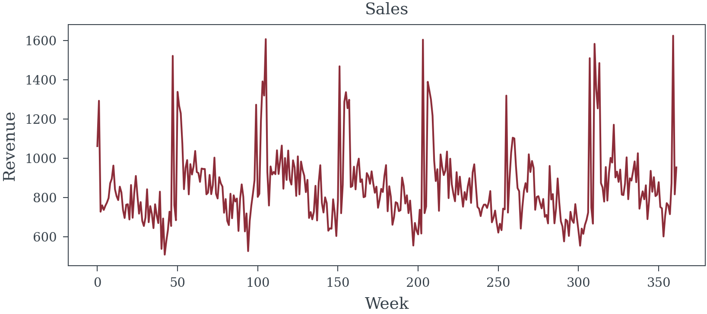
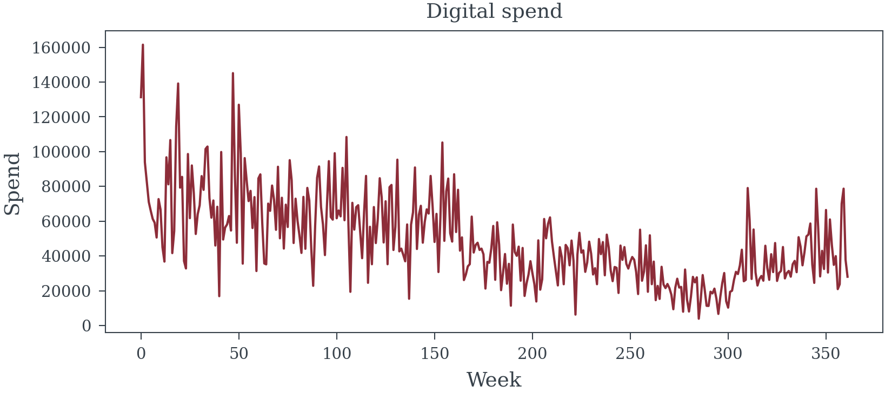
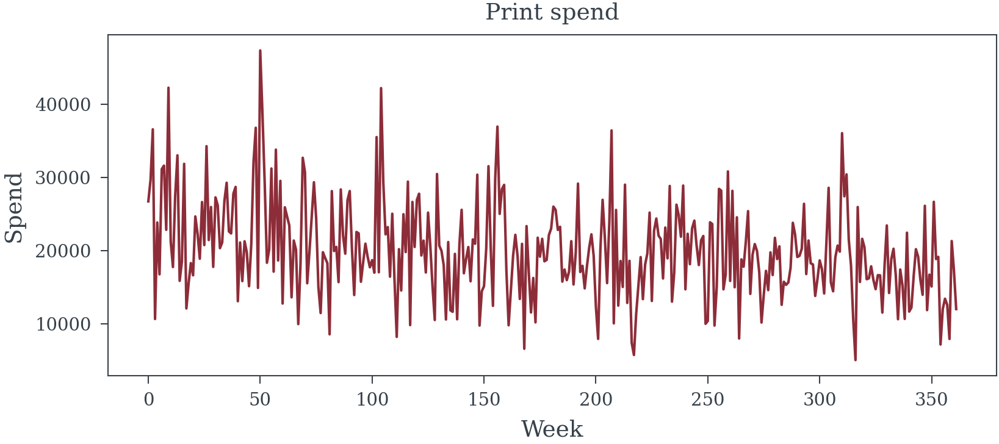
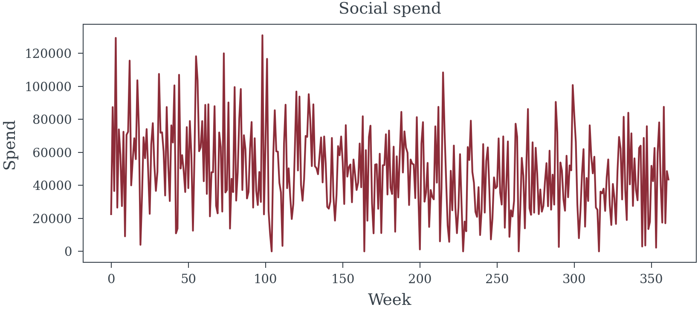
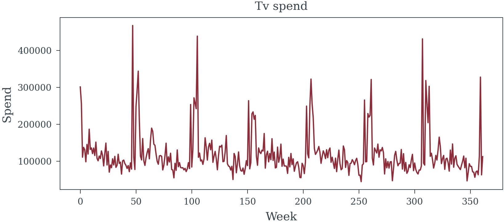
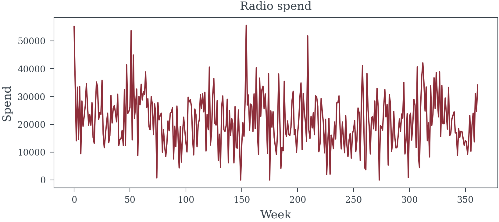
2. Approach A: The Frequentist P-Value Theater
2.1 The Analyst’s Ritual
- Variable selection via stepwise regression
- Transformation shopping for media curves
- Chasing significance across model specifications
Base Variable Selection Code
def prepare_features_for_selection(data, media_names):
"""
Prepare all possible features for stepwise selection
"""
features = pd.DataFrame()
media_features = pd.DataFrame()
# Media variables (transformed) (assuming transformation is already known)
# for name in media_names:
# features[f'{name}'] = data[f'{name}_transformed']
# All potential control variables (mixing good and bad)
control_vars = [
#'seasonality', # True Seasonality is often un-observed
'gdp_growth', 'unemployment', 'consumer_confidence',
'holidays', 'competitor_promos', 'product_lifecycle',
'distribution_index', 'quality_score', 'word_of_mouth',
'temperature', 'precipitation', 'stock_index',
'social_followers', 'website_traffic', 'num_skus',
'purchase_intent', # The MEDIATOR!
'brand_awareness', # The collider!
'temp_squared', 'awareness_change', 'intent_change' # 'spend_total'
]
for var in control_vars:
if var in data.columns:
features[var] = data[var]
# # Add some interaction terms (fishing expedition)
# features['TV_x_holidays'] = data['TV_transformed'] * data['holidays']
# features['Digital_x_confidence'] = data['Digital_transformed'] * data['consumer_confidence'] / 100
# features['Social_x_lifecycle'] = data['Social_transformed'] * data['product_lifecycle']
# features['TV_x_intent'] = data['TV_transformed'] * data['purchase_intent'] # Interaction with mediator!
for media in media_names:
media_features[f"{media}_transformed"] = data[f'{media}_transformed']
for media, half_sat, n in product(media_names, np.linspace(0.3, 0.8, 6), np.linspace(1.0, 2.0, 11)):
media_features[f'{media}_{half_sat:0.2f}_{n:0.2f}'] = hill_transformation(data[f'{media}_spend_scaled'], n, half_sat)
# add lagged variables for more complexity
if media in media_names[:2]:
media_features[f'{media}_{half_sat:0.2f}_{n:0.2f}_lag1'] = media_features[f'{media}_{half_sat:0.2f}_{n:0.2f}'].shift(1).fillna(0)
# # Add lagged variables (more complexity)
# for name in media_names[:2]: # Just TV and Digital to avoid too many variables
# features[f'{name}_lag1'] = data[f'{name}_transformed'].shift(1).fillna(0)
# Time trends
features['trend'] = np.arange(len(data)) / len(data)
features['trend_sq'] = features['trend'] ** 2
features['log_distribution_index'] = np.log(features['distribution_index'])
return features, media_features
def stepwise_selection(X, y, threshold_in=0.05, threshold_out=0.10, verbose=True):
"""
Forward-backward stepwise selection based on p-values
"""
included = []
excluded = list(X.columns)
best_aic = np.inf
if verbose:
print("\nStarting stepwise selection...")
print(f"Total candidate variables: {len(excluded)}")
print("-" * 80)
step = 0
while True:
changed = False
# Forward step
excluded_copy = excluded.copy()
best_pvalue = threshold_in + 1
best_feature = None
for feature in excluded_copy:
features = included + [feature]
X_subset = X[features]
X_with_const = sm.add_constant(X_subset, has_constant='add')
try:
model = sm.OLS(y, X_with_const).fit()
p_value = model.pvalues[feature]
if p_value < best_pvalue:
best_pvalue = p_value
best_feature = feature
best_aic_candidate = model.aic
except:
continue
if best_feature and best_pvalue < threshold_in:
included.append(best_feature)
excluded.remove(best_feature)
changed = True
step += 1
best_aic = best_aic_candidate
if verbose:
print(f"Step {step:3d} - ADDED '{best_feature:25s}' (p={best_pvalue:.4f}, AIC={best_aic:.1f})")
# Backward step
if len(included) > 0:
X_subset = X[included]
X_with_const = sm.add_constant(X_subset, has_constant='add')
model = sm.OLS(y, X_with_const).fit()
# Find worst p-value
pvalues = model.pvalues[1:] # Exclude intercept
worst_pvalue = pvalues.max()
worst_feature = pvalues.idxmax()
if worst_pvalue > threshold_out:
included.remove(worst_feature)
excluded.append(worst_feature)
changed = True
step += 1
# Refit without removed variable
X_subset_new = X[included]
X_with_const_new = sm.add_constant(X_subset_new, has_constant='add')
model_new = sm.OLS(y, X_with_const_new).fit()
best_aic = model_new.aic
if verbose:
print(f"Step {step:3d} - REMOVED '{worst_feature:25s}' (p={worst_pvalue:.4f}, AIC={best_aic:.1f})")
if not changed:
break
if verbose:
print("-" * 80)
print(f"Final model includes {len(included)} variables")
return included
Code to Select Media Transform
def select_best_transformed_media_features(features, media_features, y, media_names, base_features):
"""
Select best transformed media features based on p-values
"""
selected_media = []
total_features = features.copy()
total_features[media_features.columns] = media_features
for media_name in media_names:
best_tvalue = -np.inf
best_transform = ""
for transform in media_features.columns:
if not media_name in transform:
continue
X_subset = total_features[[transform] + base_features]
X_with_const = sm.add_constant(X_subset, has_constant='add')
try:
model = sm.OLS(y, X_with_const).fit()
t_value = model.tvalues[transform]
if t_value > best_tvalue:
best_tvalue = t_value
best_transform = transform
except:
if best_transform == "":
best_transform = transform
continue
selected_media.append(best_transform)
return selected_mediaSelect Base Variables
Starting stepwise selection...
Total candidate variables: 23
--------------------------------------------------------------------------------
Step 1 - ADDED 'holidays ' (p=0.0000, AIC=-386.9)
Step 2 - ADDED 'purchase_intent ' (p=0.0000, AIC=-692.8)
Step 3 - ADDED 'stock_index ' (p=0.0000, AIC=-904.5)
Step 4 - ADDED 'precipitation ' (p=0.0000, AIC=-1048.8)
Step 5 - ADDED 'competitor_promos ' (p=0.0000, AIC=-1185.2)
Step 6 - ADDED 'consumer_confidence ' (p=0.0000, AIC=-1334.3)
Step 7 - ADDED 'log_distribution_index ' (p=0.0000, AIC=-1499.1)
Step 8 - REMOVED 'stock_index ' (p=0.4308, AIC=-1500.5)
Step 9 - ADDED 'temperature ' (p=0.0000, AIC=-1519.1)
Step 10 - ADDED 'intent_change ' (p=0.0158, AIC=-1523.1)
Step 11 - ADDED 'brand_awareness ' (p=0.0164, AIC=-1527.0)
--------------------------------------------------------------------------------
Final model includes 9 variables
================================================================================
FREQUENTIST SELECTED BASE MODEL
================================================================================
Base Model Fit: R2 = 0.980 DW = 1.501
Selected Variables by Type:
Variable Type Coefficient Std Error P-value VIF
holidays Confounder 0.355744 0.005805 <0.01 1.67
purchase_intent MEDIATOR 2.455619 0.053301 <0.01 102.03
precipitation RED HERRING -0.027437 0.003015 <0.01 22.07
competitor_promos Confounder -0.204070 0.011011 <0.01 5.48
consumer_confidence Confounder 0.007367 0.000338 <0.01 161.88
log_distribution_index Derived/Interaction 0.257806 0.006050 <0.01 8.27
temperature RED HERRING 0.000785 0.000172 <0.01 43.61
intent_change MEDIATOR -0.100636 0.037900 <0.01 1.82
brand_awareness COLLIDER 0.000702 0.000291 0.016 32.50The base variables look reasonable there are no variables that can’t be justified even intent_change being negative could be interpreted as meaningful. Now that the base is mostly set it is time to add some media variables.
Base Model Fit: R2 = 0.983 DW = 1.477
Selected Variables by Type:
Variable Type Coefficient Std Error P-value VIF
holidays Confounder 0.316224 0.008403 <0.01 3.95
purchase_intent MEDIATOR 2.230874 0.059442 <0.01 156.94
precipitation RED HERRING -0.025306 0.002824 <0.01 22.55
competitor_promos Confounder -0.197373 0.010458 <0.01 5.65
consumer_confidence Confounder 0.006896 0.000326 <0.01 194.23
log_distribution_index Derived/Interaction 0.271841 0.006066 <0.01 11.36
temperature RED HERRING 0.000844 0.000165 <0.01 48.88
intent_change MEDIATOR -0.072703 0.035560 0.042 1.89
brand_awareness COLLIDER 0.000284 0.000277 0.306 34.24
TV_0.30_1.10 MEDIA 0.154601 0.028456 <0.01 78.08
Digital_transformed MEDIA 0.061313 0.010551 <0.01 14.19
Social_0.30_1.80 MEDIA 0.012201 0.007102 0.087 8.41
Radio_0.30_1.00 MEDIA 0.041594 0.011881 <0.01 20.55
Print_0.70_2.00 MEDIA 0.026433 0.013734 0.055 7.94Remove conusmer_confidence because of high VIF (reguardles of wether they are an important control or have a low P-value).
Base Model Fit: R2 = 0.961 DW = 1.363
Selected Variables by Type:
Variable Type Coefficient Std Error P-value VIF
holidays Confounder 0.274952 0.014279 <0.01 4.91
purchase_intent MEDIATOR 2.271407 0.089305 <0.01 134.09
precipitation RED HERRING -0.021244 0.004244 <0.01 13.94
competitor_promos Confounder -0.223028 0.015643 <0.01 5.70
log_distribution_index Derived/Interaction 0.220188 0.008361 <0.01 11.08
temperature RED HERRING 0.000934 0.000249 <0.01 38.55
intent_change MEDIATOR -0.184374 0.053043 <0.01 1.52
brand_awareness COLLIDER 0.001045 0.000413 0.012 31.88
TV_0.40_2.00 MEDIA 0.130986 0.031692 <0.01 21.52
Digital_0.30_1.30 MEDIA 0.161488 0.020682 <0.01 22.40
Social_0.80_2.00 MEDIA 0.013254 0.017932 0.460 3.84
Radio_0.30_1.00 MEDIA 0.038889 0.017930 0.031 20.03
Print_0.80_2.00 MEDIA 0.060873 0.023353 <0.01 6.75Social’s impact is really small and the p-value is too large perhaps the effect doesn’t act independently of other Digital channels so combine them. Leave them on seperate s-curves because they might still saturate differently. Also purchase_intent VIF is also too high so we will remove that too.
Base Model Fit: R2 = 0.880 DW = 1.295
Selected Variables by Type:
Variable Type Coefficient Std Error P-value VIF
holidays Confounder 0.341947 0.015059 <0.01 1.65
precipitation RED HERRING -0.033155 0.007353 <0.01 12.22
competitor_promos Confounder -0.256500 0.026846 <0.01 5.53
log_distribution_index Derived/Interaction 0.173744 0.014187 <0.01 10.89
temperature RED HERRING 0.002032 0.000428 <0.01 27.28
intent_change MEDIATOR 0.693345 0.076326 <0.01 1.21
brand_awareness COLLIDER 0.002543 0.000705 <0.01 29.09
Social+Digital Social_0.80_1.00 + Digital_transformed Derived/Interaction 0.251795 0.020300 <0.01 16.08
TV_0.30_1.70_lag1 MEDIA 0.138343 0.029999 <0.01 11.68
Radio_0.30_1.00 MEDIA 0.119849 0.030732 <0.01 17.83
Print_0.80_2.00 MEDIA 0.095220 0.040978 0.010 6.53Since the variable Social+Digital were combined we treat Social and Digital as if they both have the same coefficient estimate in the model. This is not standard statistical practice but it makes for contribution and ROI reporting easier.
================================================================================
MEDIA EFFECTS: TRUTH vs ESTIMATED
================================================================================
MEDIATOR (purchase_intent) included in model: False
Media Effect Comparison:
--------------------------------------------------------------------------------
TV:
True TOTAL effect: 0.3200
True DIRECT effect: 0.0800
Estimated effect: 0.1383 ± 0.0300
Comparing to TOTAL effect: Bias = -56.8%
95% CI: [0.0795, 0.1971]
Digital:
True TOTAL effect: 0.2800
True DIRECT effect: 0.0800
Estimated effect: 0.2518 ± 0.0203
Comparing to TOTAL effect: Bias = -10.1%
95% CI: [0.2120, 0.2916]
Social:
True TOTAL effect: 0.2000
True DIRECT effect: 0.0400
Estimated effect: 0.2518 ± 0.0203
Comparing to TOTAL effect: Bias = +25.9%
95% CI: [0.2120, 0.2916]
Radio:
True TOTAL effect: 0.1200
True DIRECT effect: 0.0400
Estimated effect: 0.1198 ± 0.0307
Comparing to TOTAL effect: Bias = -0.1%
95% CI: [0.0596, 0.1801]
Print:
True TOTAL effect: 0.0600
True DIRECT effect: 0.0200
Estimated effect: 0.0952 ± 0.0410
Comparing to TOTAL effect: Bias = +58.7%
95% CI: [0.0149, 0.1755]
================================================================================
PROBLEMATIC SELECTIONS
================================================================================
Variables that bias causal interpretation:
- precipitation (RED HERRING): coef=-0.0332, p=<0.01
→ No causal effect on sales, reduces precision
- temperature (RED HERRING): coef=0.0020, p=<0.01
→ No causal effect on sales, reduces precision
- intent_change (MEDIATOR): coef=0.6933, p=<0.01
→ Blocks indirect media effects, causing underestimation
- brand_awareness (COLLIDER): coef=0.0025, p=<0.01
→ Creates spurious associations between media and sales
Important sales drivers MISSED: ['distribution_index', 'quality_score', 'word_of_mouth']
CONFOUNDERS MISSED media estimates will be biased: ['seasonality', 'gdp_growth', 'unemployment', 'consumer_confidence', 'product_lifecycle']
Best Case Frequentest Model
| Dep. Variable: | log_sales | R-squared: | 0.896 |
| Model: | OLS | Adj. R-squared: | 0.893 |
| Method: | Least Squares | F-statistic: | 251.2 |
| Date: | Tue, 27 May 2025 | Prob (F-statistic): | 1.75e-163 |
| Time: | 00:09:32 | Log-Likelihood: | 478.70 |
| No. Observations: | 362 | AIC: | -931.4 |
| Df Residuals: | 349 | BIC: | -880.8 |
| Df Model: | 12 | ||
| Covariance Type: | nonrobust |
| coef | std err | t | P>|t| | [0.025 | 0.975] | |
| const | 6.1410 | 0.128 | 48.096 | 0.000 | 5.890 | 6.392 |
| seasonality | 0.3489 | 0.020 | 17.761 | 0.000 | 0.310 | 0.387 |
| gdp_growth | -0.1560 | 0.238 | -0.656 | 0.512 | -0.624 | 0.312 |
| unemployment | 0.0069 | 0.003 | 2.020 | 0.044 | 0.000 | 0.014 |
| consumer_confidence | 0.0067 | 0.001 | 5.906 | 0.000 | 0.004 | 0.009 |
| holidays | 0.3246 | 0.022 | 14.873 | 0.000 | 0.282 | 0.368 |
| competitor_promos | -0.2119 | 0.025 | -8.333 | 0.000 | -0.262 | -0.162 |
| product_lifecycle | -0.7336 | 0.059 | -12.426 | 0.000 | -0.850 | -0.618 |
| TV_transformed | 0.3961 | 0.079 | 5.024 | 0.000 | 0.241 | 0.551 |
| Digital_transformed | 0.3162 | 0.025 | 12.508 | 0.000 | 0.266 | 0.366 |
| Social_transformed | 0.1903 | 0.019 | 10.044 | 0.000 | 0.153 | 0.228 |
| Radio_transformed | 0.1743 | 0.032 | 5.471 | 0.000 | 0.112 | 0.237 |
| Print_transformed | 0.0509 | 0.042 | 1.200 | 0.231 | -0.033 | 0.134 |
| Omnibus: | 0.631 | Durbin-Watson: | 1.911 |
| Prob(Omnibus): | 0.730 | Jarque-Bera (JB): | 0.730 |
| Skew: | -0.018 | Prob(JB): | 0.694 |
| Kurtosis: | 2.783 | Cond. No. | 6.49e+03 |
Notes:
[1] Standard Errors assume that the covariance matrix of the errors is correctly specified.
[2] The condition number is large, 6.49e+03. This might indicate that there are
strong multicollinearity or other numerical problems.
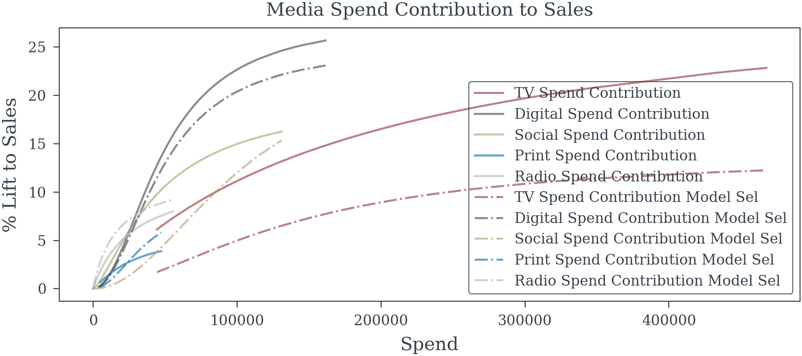
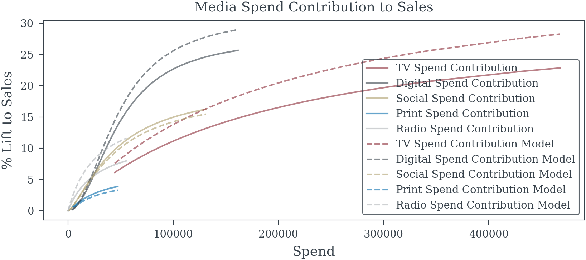
- 2.2 The Illusion of Precision
- Final model results and “significant” findings
- Narrow confidence intervals and impressive p-values
- ROI rankings and attribution claims
- 2.3 The Recommended Strategy
- Budget reallocation based on point estimates
- Projected lift and business case
3. Approach B: Bayesian Causal Reasoning
- 3.1 Mapping the Causal Landscape
- Eliciting stakeholder beliefs and concerns
- Constructing multiple plausible DAGs
- Identifying testable implications
- 3.2 Principled Variable Selection
- Spike-and-slab priors for uncertain relationships
- Posterior inclusion probabilities vs. p-values
- Handling confounders, mediators, and colliders
- 3.3 Embracing Model Uncertainty
- Bayesian Model Averaging across DAGs
- Posterior distributions of causal effects
- Sensitivity analysis to untestable assumptions
4. From Uncertainty to Decisions
- 4.1 Decision Theory Meets Marketing
- Utility functions and business objectives
- Expected value vs. robust optimization
- Portfolio theory for marketing mix
- 4.2 The Uncertainty-Aware Strategy
- Allocation recommendations with credible intervals
- Hedging across model uncertainty
- Value of information analysis
5. The Moment of Truth: Comparing Outcomes
- 5.1 Revealed Reality
- The true data generating process exposed
- How each approach performed against truth
- 5.2 Financial Impact
- ROI achieved by each strategy
- Cost of false certainty quantified
- 5.3 Robustness Analysis
- Performance across alternative scenarios
- When each approach fails catastrophically
6. Lessons for Practice
- 6.1 Why the Frequentist Approach Failed
- Specific mechanisms of failure
- Warning signs that were ignored
- 6.2 Why the Bayesian Approach (Mostly) Succeeded
- How uncertainty quantification prevented disasters
- Where even good methods struggle
- 6.3 Implementation Roadmap
- Practical steps for organizations
- Common obstacles and solutions
- Building institutional knowledge
7. Beyond the Case Study: Implications for MMM
- The scalability question
- Computational and expertise requirements
- The organizational change challenge
- A new standard for marketing analytics
Consequences of Flawed Selection in MMM
Employing naive selection methods and subsequent inference leads to significant practical problems:
Misattribution of ROI & Effects: Biased estimates for marketing coefficients (ROI) and potentially inaccurate representations of media dynamics (adstock, saturation).
Flawed Budget Allocation: Suboptimal marketing investment decisions stemming from unreliable ROI figures.
Poor Understanding of Business Drivers: Incorrect identification of baseline factors (trends, seasonality, macroeconomics) and media response patterns.
Model Instability & Non-Reproducibility: Selected factors and transformations may vary considerably with data updates, reducing model credibility.
Overfitting: Models capture noise specific to the historical data, resulting in poor predictive performance for forecasting or simulations.
Misinterpretation of Control Factor Coefficients: Attributing causal effects to the coefficients of baseline or control factors (e.g., macroeconomic variables, competitor activity) included in the model. These factors are typically observational and likely confounded themselves; their coefficients primarily reflect statistical association and adjustment needed to isolate media effects, not necessarily isolated causal impacts. This misinterpretation is related to the “Table 2 fallacy,” where coefficients from a multivariable model are improperly treated as independent causal effects.
Recommended Approaches and Considerations
Addressing these challenges requires more robust methodologies:
Rigorous Time-Series Handling: Explicitly model or remove seasonality (e.g., dummies, Fourier terms, decomposition); test for and address non-stationarity (e.g., differencing); incorporate theoretically sound lags for media (adstock) and potentially external variables.
Regularization Methods (LASSO, Ridge, Elastic Net): Handle many predictors simultaneously, perform coefficient shrinkage and implicit variable selection, often yielding more stable results than stepwise methods. Must be applied in conjunction with appropriate time-series structures.
Information Criteria (AIC, BIC): Use for comparing non-nested models that correctly account for time-series properties, providing a more principled approach than p-value thresholds alone.
Time-Series Cross-Validation: Employ methods like rolling-origin validation to assess out-of-sample predictive performance robustly.
Bayesian Frameworks: Offer a probabilistic approach to uncertainty.
Priors on Functional Forms: Incorporate prior knowledge or average over plausible media transformations (adstock/saturation) instead of hard selection.
Sparsity-Inducing Priors (e.g., Regularized Horseshoe): Provide principled variable selection for external factors by shrinking irrelevant coefficients while retaining influential ones, directly modeling inclusion uncertainty.
Causal Inference Techniques: Explore advanced time-series methods if the primary goal is establishing causal links (use with caution).
Domain Knowledge & Theory: Prioritize pre-selecting candidate factors and transformation ranges based on business logic, economic theory, and prior research. Validate final model components for plausibility and stability.
Improper Use of Domain Knowledge
Exogenous factors in MMM are frequently confounded with media variables or other unobserved drivers. Consequently, the estimated coefficient for an exogenous variable may not represent its direct causal impact on the outcome but rather the statistical adjustment necessary to deconfound the estimated media effects. Rejecting such a variable because its coefficient sign contradicts simple causal expectations might inadvertently remove a necessary control variable, potentially leading to more biased estimates of media effectiveness.
Adopting these more rigorous approaches is fundamental to developing media mix models that are statistically sound, reliable, and strategically valuable.
Reuse
Citation
BibTeX citation:
@online{reda,
author = {Reda, Matthew},
title = {The {Illusion} of {Significance}},
url = {https://redam94.github.io/common_regression_issues/the_illusion_of_significance.html},
langid = {en},
abstract = {Statistical models drive millions in spending decisions,
yet beneath their precise-looking numbers lurks a dangerous problem.
This post examines how the practice of selecting variables based on
p-values creates a statistical house of cards; especially in
Marketing Mix Modeling (MMM) and budget optimization. I show why
common techniques like stepwise regression inevitably produce
overconfident models with biased estimates that violate the very
statistical principles they claim to uphold. These methodological
flaws can result in money flowing to the wrong marketing channels
based on **illusory** performance metrics. I demonstrate why
Bayesian approaches offer a more honest alternative by naturally
tempering overconfidence, incorporating what we already know, and
providing intuitive uncertainty measures. Through techniques like
spike-and-slab priors (or regularized horseshoe priors) and Bayesian
Model Averaging (BMA), analysts can move beyond arbitrary
significance thresholds toward probability-based decision-making.
While Bayesian methods do require more computational horsepower and
thoughtful prior specification, modern software has made them
increasingly accessible. Using simulated examples inspired by
real-world marketing and economic modeling, I show how Bayesian
methods produce more reliable insights that lead to smarter budget
allocation decisions.}
}
For attribution, please cite this work as:
Reda, Matthew. n.d. “The Illusion of Significance.” https://redam94.github.io/common_regression_issues/the_illusion_of_significance.html.